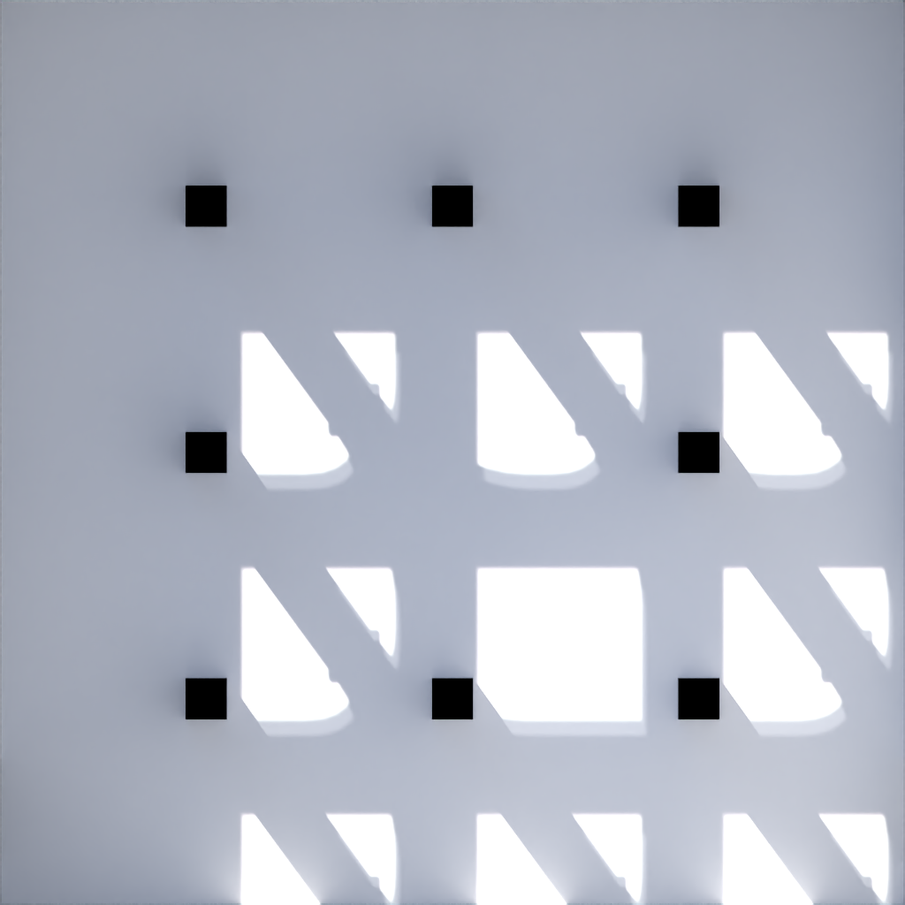
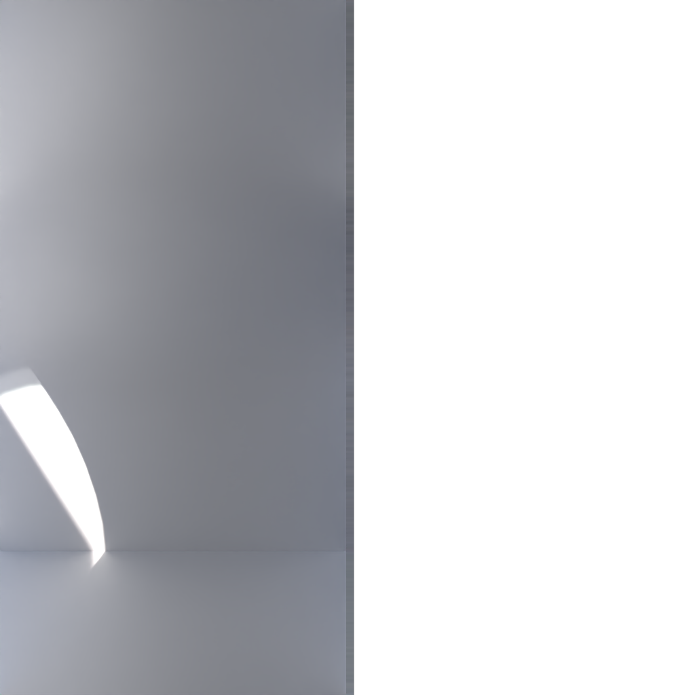
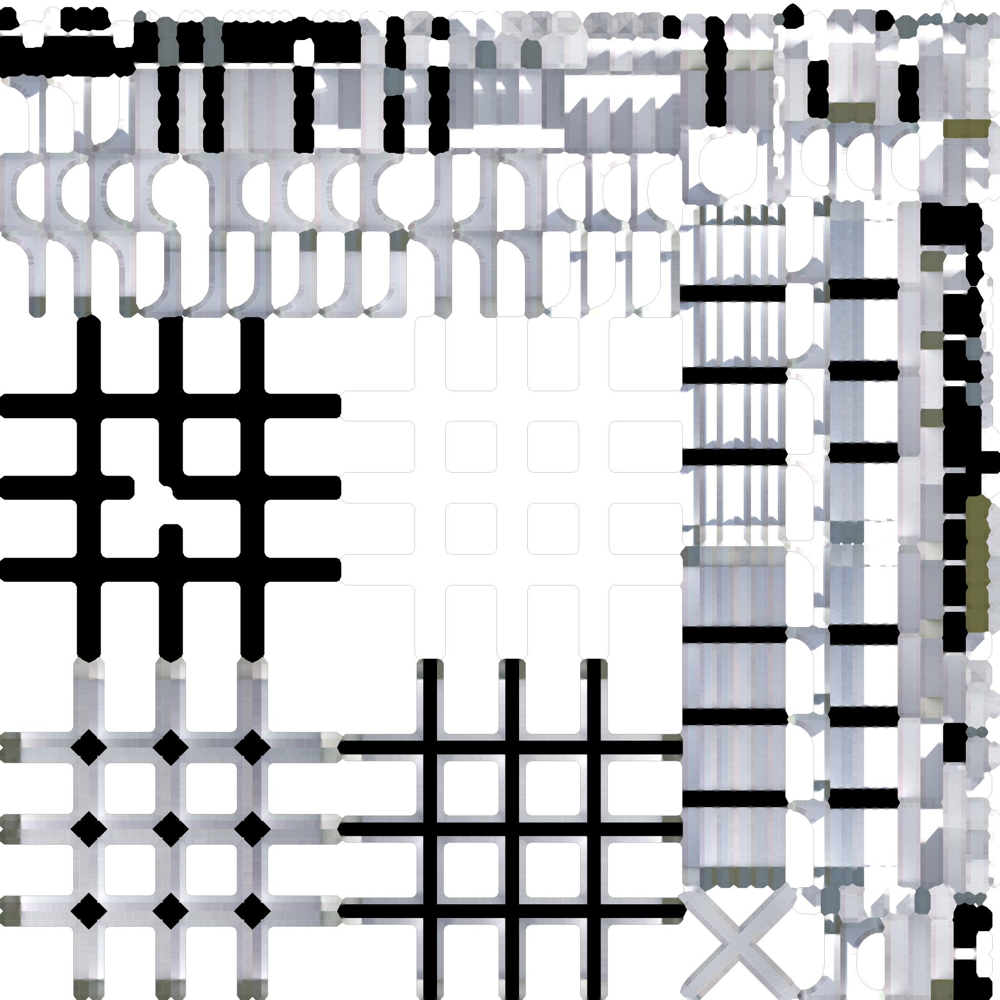
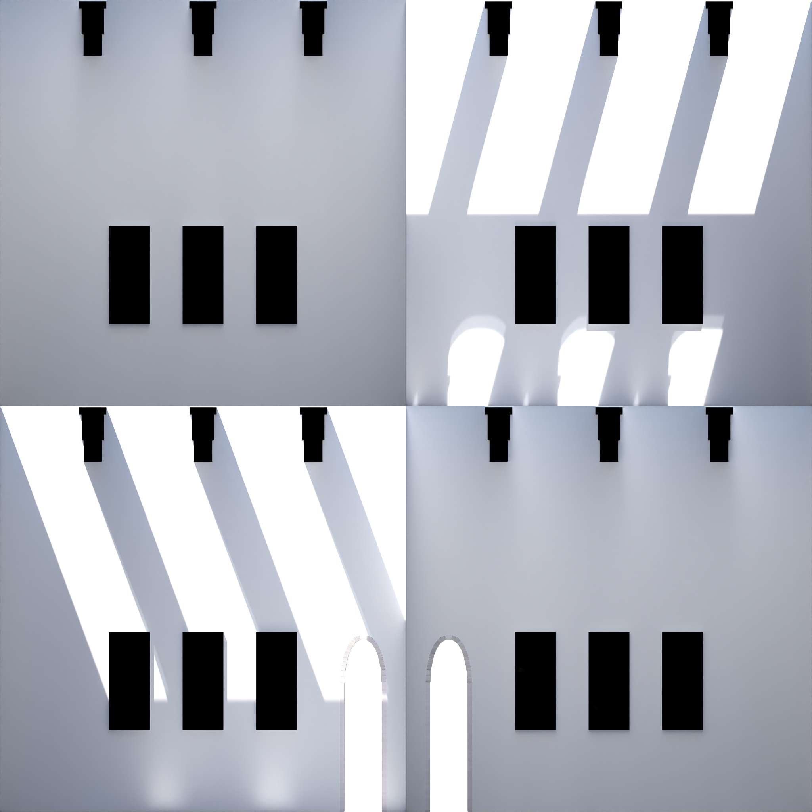
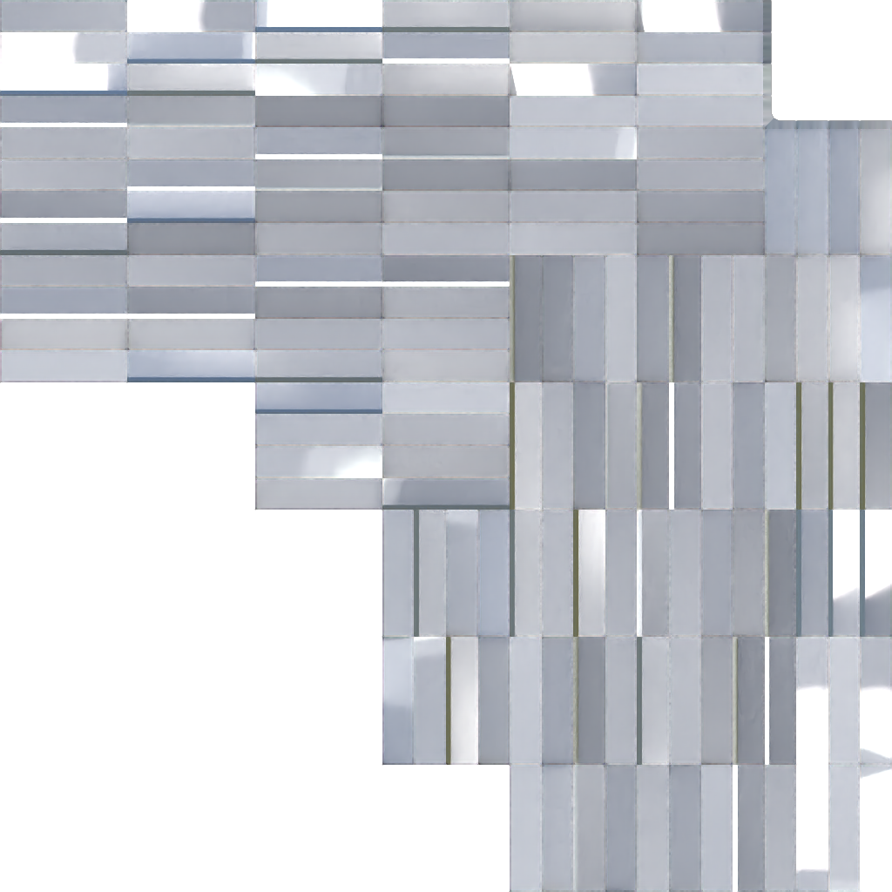

<script src="https://aframe.io/releases/1.3.0/aframe.min.js"></script>
<script src="https://cdn.jsdelivr.net/gh/c-frame/aframe-extras@7.0.0/dist/aframe-extras.min.js"></script>
<script src="aframe-lightmap.js"></script>
<script src="https://rawgit.com/fernandojsg/aframe-teleport-controls/master/dist/aframe-teleport-controls.min.js"></script>

<script src="paintings.js"></script>
<script src="hide-hallway.js"></script>

<a-scene embedded renderer="colorManagement: true;">
    <a-assets>
        <a-asset-item id="room" src="models/room.glb"></a-asset-item>
        <a-asset-item id="paintings" src="models/paintings.glb"></a-asset-item>
        <a-asset-item id="navmesh" src="models/gallery_navmesh.glb"></a-asset-item>

        
        
        
        
        

        {% for i in (1..36) %}
        
        {% endfor %}

        <audio id="music" src="arabesque.mp3" preload="auto"></audio>
    </a-assets>

    {% for i in (0..2) %}
    <a-entity gltf-model="#room" lightmap__floor="texture: #lightmap_floor; key: Floor"
        lightmap__hallway="texture: #lightmap_hallway; key: Hallway"
        lightmap__pillars="texture: #lightmap_pillars; key: Pillars"
        lightmap__walls="texture: #lightmap_walls; key: Walls" room-materials="floor_albedo:#floor_albedo"
        position="0 0 {{i | times: 14}}" {% if i==2 %} hide-hallway {%endif%}></a-entity>
    {% endfor %}

    {% for i in (0..2) %}
    {% assign offset = i | times: 12 %}
    <a-entity gltf-model="#paintings" paintings="{% for p in (1..12) %}{% assign index = p | plus: offset %}
    painting{{p}}:#painting{{index}};{% endfor %}lightmap:#lightmap_paintings;" position="0 0 {{i | times: 14}}">
    </a-entity>
    {%endfor%}

    <a-entity gltf-model="#navmesh" nav-mesh visible="false" class="collidable"></a-entity>

    <a-entity id="cameraRig" rotation="0 180 0" movement-controls="constrainToNavMesh:true;controls:keyboard,touch">
        <a-entity id="head" camera="active: true" look-controls="pointerLockEnabled:true;" position="0 1.6 0">
        </a-entity>
        <a-entity oculus-touch-controls="hand: left"
            teleport-controls="button: trigger; collisionEntities: .collidable; cameraRig: #cameraRig; teleportOrigin: #head;">
        </a-entity>
        <a-entity oculus-touch-controls="hand: right"
            teleport-controls="button: trigger; collisionEntities: .collidable; cameraRig: #cameraRig; teleportOrigin: #head;">
        </a-entity>
    </a-entity>

    <!---    
        <a-entity id="leftHand" hand-tracking-controls="hand: left;"></a-entity>
        <a-entity id="rightHand" hand-tracking-controls="hand: right;"></a-entity>
    --->

    <a-sky color="#f0f8ff"></a-sky>
</a-scene>
<script type="application/json" id="descriptions">
    [
    "A stunning digital painting of a girl with cat ears, with pink hair, pink eyes, pink butterfly wings with stars on them, wearing a white dress with floral patterns, a flower made out of crystal in the hair, a pink chocker with a metal heart in front, digital art",
    "A stunning digital painting in the style of neoclassicism of a foxgirl with red hair, red butterfly wings, with heterocromatic eyes, wearing a white and dark blue dress with constellations and zodiac signs on it. Digital art",
    "An abstract painting of a raccoon shown in the modern art museum",
    "A photograph of an orange cat playing with a supermassive black hole",
    "A confused looking cat sitting at a cat with a plate of vegetables in front of him, Ghibli style",
    "An expressive oil painting of a fox with butterfly wings, depicted as an explosion of a nebula",
    "A maid with cat ears on her head",
    "A low poly, low res, very chonky caracal cat, screenshot from Playstation console",
    "An expressive oil painting of a fox with butterfly wings, depicted as an explosion of a nebula",
    "Photograph of a very unique virtual japanese pop idol stage, geometric patterns, colorful, interesting shapes, very surreal, breaks the laws of physics",
    "Macro shot of a Lego Minifig which is completely white, without any face or hair. It's standing in the middle of an extremely colorful box made out of Lego bricks. The colors from the walls are reflected on the minifig. Well lit shot, strong depth of field.",
    "A girl with pink hair and pink twintails, black sweater. She has bows in her hair and a butterfly hairpin. She has pink cat ears and tail with a bow on the end. She is standing in front of the Eiffel Tower at dusk. Digital art, very detailed and expressive, trending on Artstation",
    "A macro photograph of a tiny Boeing 747 flying towards a flower. Studio lighting, strong depth of field",
    "A white cat dueling a huge rat. The cat is holding two corn cobs in his hand, while the rat is t-posing and wearing a Pope hat. The painting is extremely epic, very dramatic framing. Powerful and expressive digital art.",
    "A very cute, realistic looking smiling red fox looking at the viewer. The background is intricate and colorful, full of geometric floral patterns. Artwork by Louis Wain",
    "a cat's eye seen through a keyhole, oil painting",
    "Detailed painting mixing pixel art and realism. It shows a very surreal scene taking place around a table (Edited image through a collage of Minecraft paintings)",
    "Photograph of the Hindenburg disaster, but instead of the zeppelin there is a giant exploding carrot surrounded by smoke and flames, black and white, 1937",
    "A window to the multiverse, oil painting",
    "A window to the multiverse, oil painting",
    "Photograph of the lobby of an airship, clouds can be seen below looking out of the window, while on the top the red balloon of the airship and its ropes can be seen. The lobby is very large and Art Deco style, the floor is covered with a red carpet with a geometric patterns with triangles. There are fancy art deco sofas, a table with a gramophone, and paintings on the walls",
    "Virtual Reality, René Magritte, 1929",
    "Virtual Reality, René Magritte, 1929",
    "Cat with an apple in front of his face, René Magritte, 1929",
    "A stunning painting of a girl with cat ears, with pink hair, pink eyes, pink butterfly wings, wearing a white dress with floral patterns, a flower made out of crystal in the hair, a pink chocker with a metal heart in front. Sandro Botticelli, 1487",
    "This painting was created by having a grid of glasses each holding a different coloured liquid",
    "This painting was created by having a grid of glasses each holding a different coloured liquid",
    "A bunch of glasses each holding different coloured liquid that looks like every planet of the solar system",
    "A bunch of coloured glasses viewed from the top. Inside of each glass there are different depictions of the universe, including galaxies, planets, trees, single celled organisms, and the face of a man",
    "Marble sculpture of a hand, placed in front of an explosion of multicolored smoke",
    "Clay render of the cathedral of Santa Maria del Fiore",
    "The world's first cathedral dedicated to DMT entities, professional photograph from the interior",
    "Mario sprite from Super Mario Bros for the NES viewed through a kaleidoscope",
    "Up close photograph of a lightbulb with fireworks inside of it",
    "A man in the foreground is leaning over a railing inside of a spaceport, looking outside at a massive, magnificent spaceship floating over the void in the progress of docking. The spaceport orbiting right over Earth, and is in a steampunk style (This image is the result of multiple iterations of uncropping, starting from Renaissance style spaceship)",
    "A narrow art gallery, with white walls, white pillars, the roof seems to be open and bright sunlight is streaming in"
    ]
</script>
<script>
    const scene = document.querySelector("a-scene");
    const rig = document.querySelector("#cameraRig");

    let clicked = false;
    document.body.addEventListener("click", () => {
        if (!clicked) {
            let soundEntity = document.createElement("a-entity");
            soundEntity.setAttribute("id", "music");
            soundEntity.setAttribute("position", "0 10 14");
            soundEntity.setAttribute("sound",{
                loop:true,
                autoplay:true,
                rolloffFactor:0.01,
                src:"#music"
            })
            scene.appendChild(soundEntity);
            clicked = true;
        }
    });

    const descriptions = JSON.parse(document.getElementById('descriptions').innerHTML);

    for (let room = 0; room < 3; room++) {
        for (let face = 0; face < 4; face++) {
            for (let i = 0; i < 3; i++) {
                let index = room * 12 + face * 3 + i;
                let entity = document.createElement("a-entity");
                entity.setAttribute("geometry", {
                    primitive: "plane",
                    height: "0.45",
                    width: "1.1"
                });
                entity.setAttribute("material", {
                    "color": "#404040"
                });
                entity.setAttribute("text", {
                    value: descriptions[index],
                    align: "center",
                    color: "#ffffff",
                    width: 1
                });
                let x = -5.49;
                let y = 2 + i * -2;
                let final_offset = 14 * room;
                let final_x, final_y;
                switch (face) {
                    case 0: { final_x = x; final_y = y; break; }
                    case 1: { final_x = -y; final_y = x; break; }
                    case 2: { final_x = -x; final_y = -y; break; }
                    case 3: { final_x = y; final_y = -x; break; }
                }
                final_y += final_offset;
                rotation = 90 + face * -90;

                entity.setAttribute("position", final_x.toString() + " 0.5 " + final_y.toString());
                entity.setAttribute("rotation", "0 " + rotation.toString() + " 0");
                scene.appendChild(entity);
            }
        }
    }
</script>